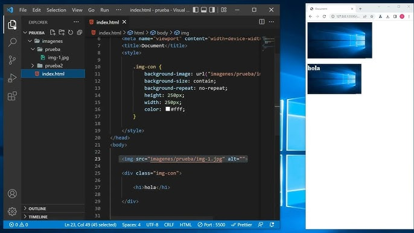

TECNOLOGIAS DE LA INFORMACION Y COMUNICACION |
SUBMODULO 1 - GESTION DE ARCHIVOS DE TEXTO |
SUBMODULO 2 - HOJA DE CALCULO |
SUBMODULO 3 - DESARROLLO Y CARACTERISTICAS DE DOCUMENTOS ELECTRONICOS |
SUBMODULO 4 - COMUNIDADES VIRTUALES |
SUBMODULO 5 - MANTENIMIENTO Y REDES DE COMPUTO |
SUBMODULO 6 - SISTEMA DE INFORMACION |
SUBMODULO 7 - PROGRAMACION |
SUBMODULO 8 - PROGRAMACION VISUAL |
SUBMODULO 9 - PAGINAS WEB |
SUBMODULO 10 - DISEÑO DIGITAL |
SUBMODULO 11 - PROGRAMACION DE APLICACIONES DE EQUIPOS MOVILES |
SUBMODULO 1:GESTION DE ARCHIVOS DE TEXTO |
Construye documentos electrónicos utilizando las distintas herramientas de inserción y diseño, favoreciendo la comunicación ética y creativa, cubriendo las necesidades de su contexto. |

SUBMODULO 2:HOJA DE CALCULO |
Emplea la hoja de cálculo con funciones avanzadas, tablas dinámicas y/o macros, para resolver problemas de manera consciente y responsable de su entorno laboral y académico. |
SUBMODULO 3:DESARROLLO Y CARACTERISTICAS DE DOCUMENTOS ELECTRONICOS |
Emplea las presentaciones electrónicas para expresarse creativamente. |

SUBMODULO 4:COMUNIDADES VIRTUALES |
Define diferentes tipos de redes y comunidades virtuales, tanto personales, laborales y escolares, para el intercambio de información y archivos multimedia en el ámbito laboral
profesional de manera ética y responsable. |

SUBMODULO 5:MANTENIMIENTO Y REDES DE COMPUTO |
Propone las características del equipo de cómputo, que satisfacen las necesidades de diferentes usuarios al emplear diversas configuraciones para un óptimo funcionamiento en el
ámbito educativo, laboral y profesional, de forma innovadora y responsable. |

SUBMODULO 6:SISTEMA DE INFORMACION |
Utiliza la metodología para el desarrollo de software, favoreciendo el trabajo colaborativo y creativo en la resolución de problemas de su contexto. |

SUBMODULO 7:PROGRAMACION |
Plantea el uso de diagramas de flujo y algoritmos, fomentando su desarrollo creativo, para solucionar problemas cotidianos de su contexto. |

SUBMODULO 8:PROGRAMACION VISUAL |
Crear entornos gráficos mediante el uso de códigos. |

SUBMODULO 9:PAGINAS WEB |
Utiliza los elementos de programación para resolver un problema. |

SUBMODULO 10:DISEÑO DIGITAL |
Ilustra ideas publicitarias y de comunicación a través de diseño de imágenes digitales, utilizando diferentes herramientas de las aplicaciones de software de diseño, en un ambiente responsable y creativo. |

SUBMODULO 11:PROGRAMACION DE APLICACIONES DE EQUIPOS MOVILES |
Identifica la diferencia entre una aplicación móvil y un programa de escritorio. |